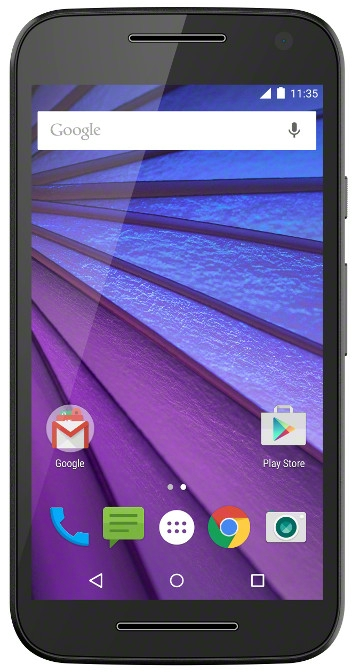

Motorola Moto G 2015 (motorola-osprey)
Jump to navigation
Jump to search
Hardware details (
|
 Moto G 2015 | |
| Manufacturer | Motorola |
|---|---|
| Name | Moto G 2015 |
| Codename | motorola-osprey |
| Released | 2015 |
| Category | testing |
| Original software | Android |
| Original version | 5.1.1 |
| Hardware | |
| Chipset | Qualcomm Snapdragon 410 (MSM8916) |
| CPU | Quad-core 1.4 GHz Cortex-A53 |
| GPU | Adreno 306 |
| Display | 720x1280 IPS |
| Storage | 8/16 GB |
| Memory | 1/2 GB |
| Architecture | aarch64 |
| Unixbench Whet/Dhry score | 902.7 |
{kind=link}
| USB Networking |
Works
|
|---|---|
| Flashing |
Works
|
| Touchscreen |
Works
|
| Display |
Partial
|
| WiFi |
Works
|
| FDE | |
| Mainline |
Works
|
| Battery | |
| 3D Acceleration |
Works
|
| Audio |
Works
|
| Bluetooth |
Partial
|
| Camera | |
| GPS |
Works
|
| Mobile data | |
| SMS | |
| Calls | |
| USB OTG | |
| NFC | |
| Accelerometer | |
|---|---|
| Magnetometer | |
| Ambient Light | |
| Proximity | |
| Hall Effect | |
| Barometer | |
| Power Sensor | |
| Camera Flash | |
|---|---|
| Keyboard | |
| Touchpad | |
| USB-A | |
| HDMI/DP | |
| Ir TX | |
| Ir RX | |
| Stylus | |
| Haptics | |
| Ethernet | |
| FOSS bootloader | |
|
This device is based on the Snapdragon 410. See the SoC page for common tips, guides and troubleshooting steps |
Contributors
Maintainer(s)
Device owners
- Ata2001
- Colaur (Notes: Functionnal, broken glass)
- Egbert (Notes: used as test device)
- Fennell
- Frbrr02 (Notes: Model: XT1541)
- Hpott
- MartijnBraam
- MishterKirby
- Nobodywasishere (Notes: Cracked glass and SIM doesn't work, otherwise functional)
- Unrznbl (Notes: 2022-09-21 testing)
How to enter flash mode
Power off the device, hold down the Power and the Volume Up key for 1-2 seconds. Some devices you may need to hold down the Power and the Volume Down key instead.
For unlocking the bootloader see Bootloader#Motorola.
There is some exploit, but it caused bootloops on this particular model according to a community report: https://github.com/alephsecurity/initroot
Mainline Installation
Follow the Installation_guide.
Download lk2nd from https://github.com/msm8916-mainline/lk2nd and flash it to the device. Make sure lk2nd is active before flashing postmarketos kernel.
Follow Qualcomm_Snapdragon_410/412_(MSM8916)#Installation.
User Interface
The following user interfaces run on the device:
- Xfce4
- Mate
- Sxmo
- Phosh
Known Issues
- Brightness slider doesn't work
- Bluetooth paring and audio works but file transfers fail
- Password entry pad occasionally becomes unresponsive
Hardware details (hwtest)
| Category | Model | Path | Status | Value |
|---|---|---|---|---|
| framebuffer | msm | /sys/class/graphics/fb0 | Working | U:720x1280p-0 |
| drm | /sys/class/drm/card0-DSI-1 | Working | 720x1280 | |
| input | Synaptics S2726BR_T | /dev/input/event3 | Working | |
| input | GPIO Buttons | /dev/input/event2 | Working | |
| input | pm8941_resin | /dev/input/event1 | Working | |
| input | pm8941_pwrkey | /dev/input/event0 | Working |
Photos
{kind=link}
{kind=link}
{kind=link}
Links
- pmbootstrap!714 Initial merge request
- LineageOS wiki
- Device package